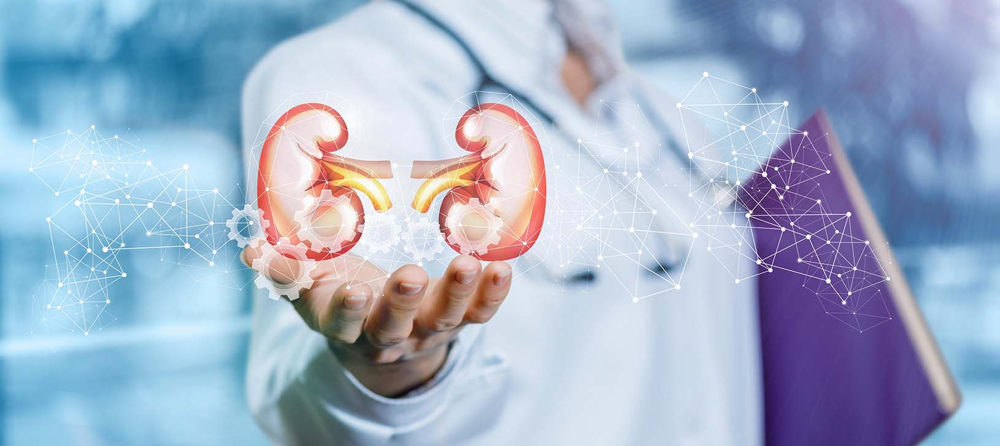
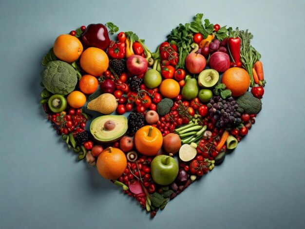

కిడ్నీలు రక్తాన్ని శుద్ధి చేయడంలో మరియు శరీరంలోని అదనపు ద్రవాలను తొలగించడంలో ముఖ్యమైన పాత్ర పోషిస్తాయి. అవి ప్రతి రోజు సుమారు 200 లీటర్ల రక్తాన్ని ఫిల్టర్ చేస్తాయి.
కిడ్నీ వ్యవస్థలో ముఖ్యమైన భాగాలు:
- నెఫ్రాన్లు: ఇవి కిడ్నీ యొక్క మూలక అణువులు, ఇవి రక్తాన్ని ఫిల్టర్ చేసి మూత్రాన్ని సృష్టిస్తాయి.
- గ్లోమెరులు: ఇవి రక్తాన్ని ఫిల్టర్ చేయడం ప్రారంభించే ఒక చిన్న రక్తనాళాల సమూహం.
శరీరంలోని నిర్లక్ష్యాలు, అలవాట్లు మరియు అనారోగ్యాలు కిడ్నీ పనితీరు పై ప్రభావం చూపవచ్చు. కాబట్టి, సరైన ఆహారం, పర్యావరణ పరిశుభ్రత మరియు వైద్య నియమాలు పాటించడం ముఖ్యము.
కిడ్నీ ఆరోగ్యాన్ని సంరక్షించేందుకు సరైన ఆహారాన్ని తీసుకోవడం చాలా ముఖ్యం
- తాజా పండ్లు మరియు కూరగాయలు: ఉసిరికాయ, బేర్లు, గుమ్మడికాయ వంటి పండ్లు మరియు క్యాబేజీ, పుచ్చకాయ వంటి కూరగాయలు తీసుకోవడం.
- తక్కువ సోడియం: ఉప్పు తక్కువగా ఉండే ఆహారాలు, ప్రాసెస్ చేయబడిన ఆహారాలు తగ్గించడం.
- సరైన హైడ్రేషన్: తగినంత నీరు తాగడం, అయినా డాక్టర్ సూచనలు పాటించడం.